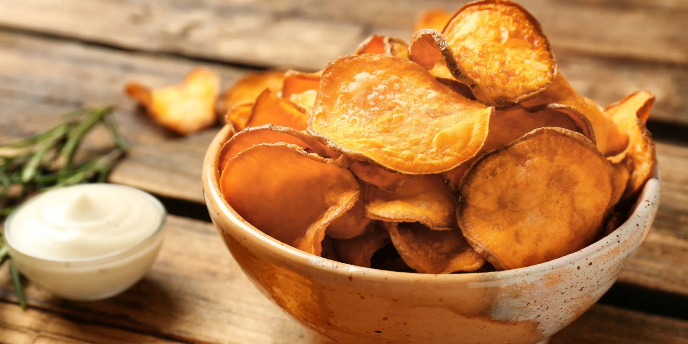

Проверенные блюда из сладкого картофеля — от запечённого батата и чипсов до цукатов и хлеба. Пошаговые инструкции с фотографиями.
Простые и вкусные блюда из батата — от закусок до десертов.
Сочное мясо кролика с кусочками батата под сырной корочкой. Сытное блюдо на каждый день — пальчики оближешь.
Запечённые половинки батата с начинкой из куриной грудки, лука и маринованных огурцов под сырной корочкой.

Пикантная начинка из фасоли, кукурузы и овощей с сыром тофу. Подаётся с лёгким соусом из авокадо.

Мягкое дрожжевое тесто с пюре или тёртым бататом. Можно добавить варенье, кунжут, мак или орехи.

Полезное лакомство, заменяющее конфеты. Сладкие кусочки батата для выпечки, салатов и самостоятельного перекуса.

Хрустящие тонкие чипсы без фритюра и лишнего масла. Готовятся из пюре с любимыми специями за 10 минут.
Подберите сорт в каталоге и свяжитесь с нами по вопросам наличия посадочного материала.